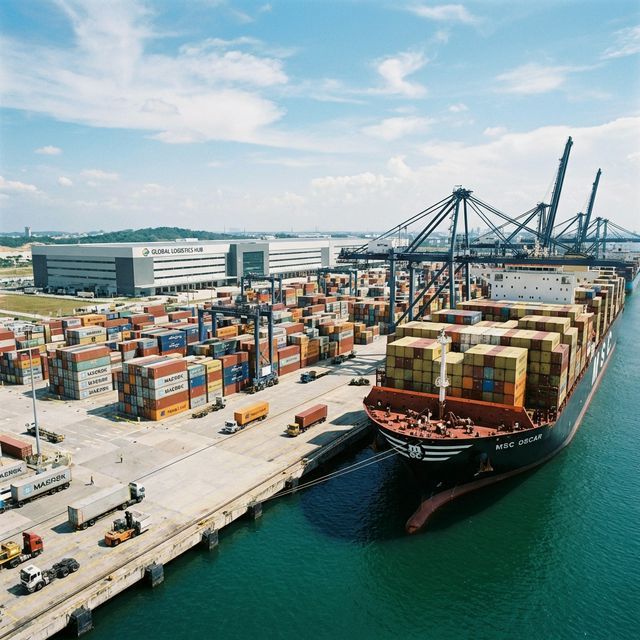

About Sayona Shipping Services
Trusted logistics partner delivering reliable cargo solutions across India and globally.
Engineered for Global Reach
Established in 2020 and backed by decades of combined industry expertise, Sayona Shipping Services is built on a foundation of operational transparency and logistical precision. We don't just move freight; we optimize supply chains for manufacturers, exporters, and international businesses.
Handling a diverse portfolio spanning raw textiles to highly sensitive pharmaceuticals, our infrastructure is designed to mitigate risk while maximizing transit speed. We maintain rigorous compliance standards across domestic transport, multi-modal freight forwarding, and customs clearance.
Reliability
24/7 Monitored Routes
Compliance
Industry Compliance Standard

500+
Clients Served
0
% On-Time Delivery
0
Active Routes
0
Global Partners
0
Countries Served
Our Mission
To architect and execute fault-tolerant logistics networks that power international trade. We eliminate supply chain friction through strategic routing, predictive tracking, and unwavering operational integrity.
Our Vision
To be the definitive baseline for freight reliability in South Asia, scaling our digital and physical infrastructure to support next-generation, high-speed global commerce.
Growth Trajectory
Foundation
Established operations focusing on the textile export corridors.
Digital Transition
Launched advanced client portals and centralized tracking algorithms.
Vertical Expansion
Added critical capabilities for pharmaceutical and automotive transport.
Global Networking
Securing 15+ international strategic port alliances.
Strategic Operational Nodes
Positioned perfectly to intercept global shipping lanes and provide seamless inland distribution networks.
Chennai HQ
Central command and primary seaport gateway for deep-ocean freight control.
Tamil Nadu, India
Bangalore
Strategic hub for air freight operations and high-tech electronic component exports.
Karnataka, India
Tiruppur / Coimbatore
Textile and manufacturing concentration for dedicated industrial consolidation.
Tamil Nadu, India